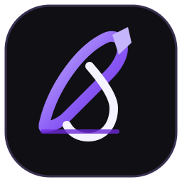

ملاحظات Markdown
ملفات نصية محلية تملكها بالكامل، بلا قفل على صيغة خاصة.

وِرَاقمساحة معرفتكمساحة المعرفة الشخصية
ملاحظات مترابطة. معرفة تكبر معك. وواجهة عربية صممت لتبقى خفيفة.
ملفات نصية محلية تملكها بالكامل، بلا قفل على صيغة خاصة.
روابط داخلية، روابط عكسية، وخريطة مرئية لعالمك المعرفي.
ابحث في العناوين والمحتوى والوسوم خلال لحظات.
لا حساب مطلوب ولا خادم خارجي؛ ملفاتك تبقى في جهازك.